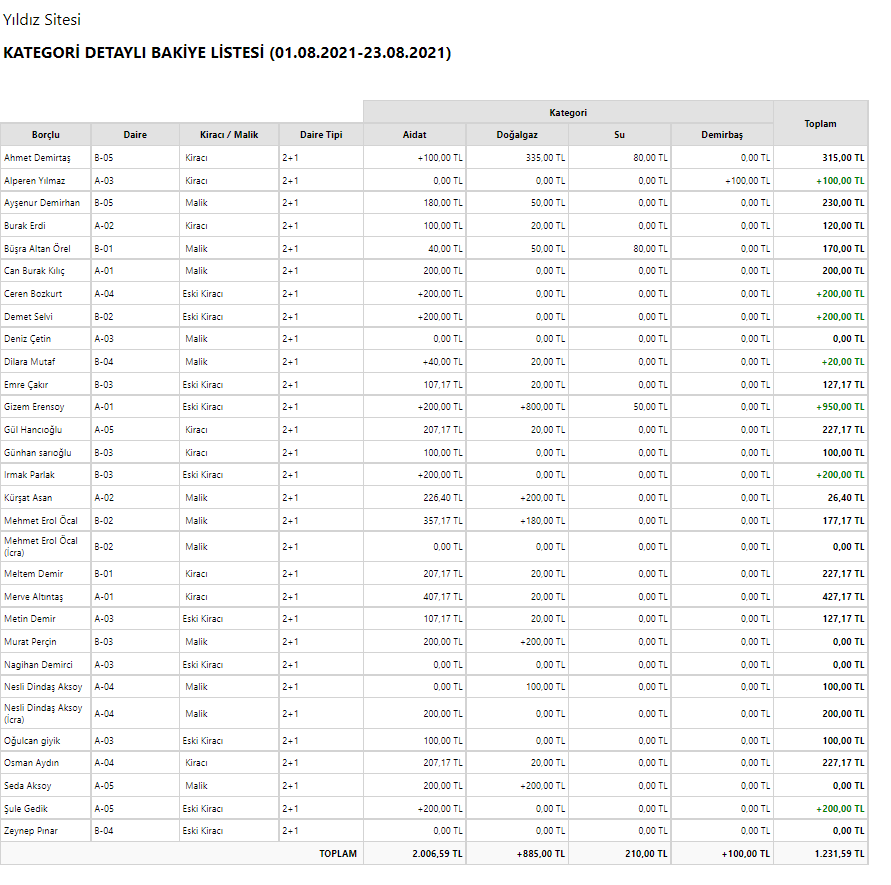

KATEGORİ DETAYLI BAKİYE LİSTESİ
Geçerli olan paketler; Standart ✓ Prestij ✓ Kurumsal ✓
Verilen ilk ve son tarih arasında (ilk ve son tarih dahil olmak üzere);
- İki tarih arasındaki borçlandırma tutarı
- İki tarih arasındaki tahsilat tutarı
- İki tarihten önceki borç veya alacak tutarı
- Verilen son tarih itibariyle borç veya alacak toplamı görülmektedir.

Dikkat edilmesi gerekenler;
- Rapor, tazminat dahil borç tutarlarını göstermektedir.
- Rapora verilen son tarihten sonra borç veya alacak olması raporu etkilemez.
- Raporda göstermek istediğiniz kategoriyi seçebilirsiniz.
- Kişinin hangi kategoride borcu varsa onu gösterir.
- Kişinin yapmış olduğu fazla ödeme varsa ilgili kategoriye artı bakiye olarak yansımaktadır.
- Toplam borçtan artı bakiyeyi çıkartarak kalan borcu gösterir.
- Diğer raporlarla karşılaştırılamaz.